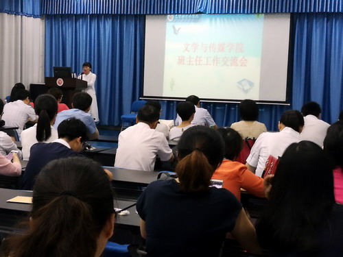

发布日期：2017-08-17
为进一步加强学生思想教育和管理工作，加强班主任之间的交流和研讨，推广班主任工作的成功经验，更好地发挥班主任在大学生思想引领、学习和生活引导方面的积极作用，6月30日上午，文传学院在文友楼204召开班主任工作交流会。文传学院院长吴国富、党委书记汤红莲出席大会，学生科、团委、办公室负责人及全体班主任、辅导员40余人参加大会，大会由文传学院副院长吴疆主持。
吴国富院长首先发言。他指出，班主任是高校管理工作中的重要角色，班主任工作是高校教师职业生涯中不可分割的一部分。作为高校教师，一定要正确认识职业发展，克服倦怠情绪，树立全院一盘棋的意识，增强团结协作，发挥自己的正能量。

交流会特邀外语学院的公佳颖老师、机材学院的魏秋华老师做交流发言。公老师和魏老师分别从自己的工作实践出发，分享了许多行之有效的工作方法。
文传学院邱庆兰老师、熊育兰老师、李向华老师老师结合工作中的典型案例，分别从班主任工作的责任心、爱心、耐心等方面讲述了班主任工作方法和自己从事班主任工作的体会。
汤红莲书记进行了总结发言。汤书记对全体班主任的无私奉献表示了由衷感谢，同时再次指出，班主任老师对学生有着非常重大的影响，教师的态度决定着学生的成长。希望广大班主任能够与时俱进，创新工作方法，提高工作质量，不断提高个人人格修养，做学生世界观、人生观和价值观的引领者。
会上，吴疆副院长宣读了新生班主任名单，仲玫老师作为代表发言。宣读了受到表彰的班级。
历时两个小时的会议，为确保学生安全稳定，推进学院学生管理工作持续良好开展提供了宝贵的沟通平台。
上一篇： 机材学院召开期末全院教职工大会
下一篇：校医院召开期未职工大会